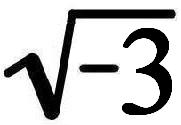

［（5）古典政治经济学和庸俗政治经济学的本质区别。利息和地租是商品市场价格的构成要素。庸俗经济学家企图赋予利息和地租的不合理形式以合理的外观］
[（5）古典政治经济学和庸俗政治经济学的本质区别。利息和地租是商品市场价格的构成要素。庸俗经济学家企图赋予利息和地租的不合理形式以合理的外观]
[ⅩⅤ―919]在生息资本上，——由于利润分为利息和[产业]利润，——资本取得了它的最彻底的物的形式，它的纯粹的拜物教形式，剩余价值的性质表现为一种完全丧失了它自身的东西。正象土地表现为地租的源泉，劳动表现为工资（部分是真正的工资，部分是产业利润）的源泉一样，资本——作为物——在这里表现为价值的独立的源泉，表现为价值的创造者。诚然，这种观点的代表者始终认为，商品的价格应当支付工资、利息和地租，但它支付它们是因为加入商品的土地创造地租，加入商品的资本创造利息，加入商品的劳动创造工资；是因为它们创造了落入它们各自的所有者或代表[920]——土地所有者、资本家和劳动者（雇佣工人和产业家）——手里的这几部分价值。因此，从这个观点来看，说一方面商品的价格决定工资、地租和利息，另一方面利息、地租和工资的价格决定商品的价格，在理论上也没有什么矛盾，或者说，如果有矛盾，那也是价格的实际运动的矛盾或循环论证。
不错，利率会波动，但它只是和其他任何商品市场价格的波动一样，取决于供求关系。这不会使利息不再成为资本内在的东西，就象商品价格的波动不会使价格不再成为商品固有的规定一样。
因此，一方面，只要土地、资本和劳动被看作地租、利息和工资的源泉，而地租、利息和工资被看作商品价格的构成要素，土地、资本和劳动就表现为创造价值的要素；另一方面，只要它们归于每一种生产价值的工具的所有者，并把它们创造的那部分产品价值归于他，它们就表现为收入的源泉，而地租、利息和工资的形式则表现为分配形式。（庸俗经济学家把分配形式实际上只当作从另一角度看的生产形式，而批判的经济学家却把它们彼此分开，并且否认它们的同一性，这一点表明，正如我们以后将看到的，和批判的政治经济学比较起来，庸俗经济学家真是愚蠢透顶。）
在生息资本上，资本表现为它作为货币或商品所具有的价值或剩余价值的独立源泉。而且它是在本身，在自己的物的形式上成为这样的源泉的。诚然，资本为了实现它的这种属性必须加入生产过程，但是土地或劳动也必须这样做。
因此，很明显，为什么庸俗政治经济学宁愿采取“土地―地租，资本―利息，劳动―工资”这样的公式，而不愿采取斯密等人用来说明价格要素（更确切地说，价格分解成的各部分）的公式，在这一公式里出现的是“资本―利润”的关系，所有的古典经济学家一般都用这种关系来说明资本关系本身。在利润中还包含着同[生产]过程的[使庸俗政治经济学]感到为难的联系，剩余价值和资本主义生产的真正性质（和它们的外部表现不同）还多少可以辨认。当利息被说成是资本的真正产物，从而剩余价值的另一部分即产业利润完全消失并归入工资范畴时，情况就不再是如此了。
古典政治经济学力求通过分析，把各种固定的和彼此异化的财富形式还原为它们的内在的统一性，并从它们身上剥去那种使它们漠不相关地相互并存的形式；它想了解与表现形式的多样性不同的内在联系。因此，它把地租还原为超额利润，这样，地租就不再作为特殊的，独立的形式而存在，就和它的虚假的源泉即土地分离开来。它同样剥去了利息的独立形式，证明它是利润的一部分。于是，它把非劳动者借以从商品价值中获取份额的一切收入形式，一切独立的形式或名义都还原为利润这一种形式。但是利润归结为剩余价值，因为全部商品的价值都归结为劳动；商品中包含的有酬劳动量归结为工资；因此，超过这一数量的余额归结为无酬劳动，归结为在各种名义下被无偿地占有的、然而是由资本引起的剩余劳动。在进行这种分析的时候，古典政治经济学有时也陷入矛盾；它往往试图不揭示中介环节就直接进行这种还原和证明不同形式的源泉的同一性。但这是它的分析方法的必然结果，[921]批判和理解必须从这一方法开始。它感兴趣的不是从起源来说明各种不同的形式，而是通过分析来把它们还原为它们的统一性，因为它是从把它们作为已知的前提出发的。但是，分析是说明起源，理解实际形成过程的不同阶段的必要前提。最后，古典政治经济学的缺点和错误是：它把资本的基本形式，即以占有别人劳动为目的的生产，不是解释为社会生产的历史形式，而是解释为社会生产的自然形式，不过它自己已通过它的分析开辟了一条消除这种解释的道路。
庸俗政治经济学的情况就完全不同了，正当政治经济学本身由于它的分析而使它自己的前提瓦解、动摇的时候，正当政治经济学的对立面也已经因此而多少以经济的、空想的、批判的和革命的形式存在的时候，庸俗政治经济学开始嚣张起来。因为政治经济学和由它自身产生的对立面的发展，是同资本主义生产固有的社会矛盾以及阶级斗争的现实发展齐头并进的。只是在政治经济学达到一定的发展程度（即在亚·斯密以后）和形成稳固的形式时，政治经济学中的一个因素，即作为现象观念的单纯的现象复写，即它的庸俗因素，才作为政治经济学的特殊表现形式从中分离出来。例如萨伊就把亚·斯密著作中这里或那里渗透的庸俗观念分离出来，并作为特殊的结晶和亚·斯密并存。随着李嘉图的出现和由他引起的政治经济学的进一步发展，庸俗经济学家也得到了新的营养（因为他自己什么也不生产），政治经济学越是接近它的完成，也就是说它越是走向深入和发展成为对立的体系，它自身的庸俗因素，由于用它按照自己的方法准备的材料把自己充实起来，就越是独立地和它相对立，直到最后在学术上的混合主义和无原则的折衷主义的编纂中找到了自己至上的表现。
随着政治经济学的深入发展，它不仅自己表现出矛盾和对立，而且它自身的对立面，也随着社会经济生活中的现实矛盾的发展而出现在它的面前。与这种情况相适应，庸俗政治经济学也就有意识地越来越成为辩护论的经济学，并且千方百计力图通过空谈来摆脱反映矛盾的思想。因此，萨伊同例如巴师夏比较起来还算是一个批评家，还算无所偏袒，因为他在斯密的著作里发现的矛盾相对说来还是未发展的，而巴师夏却是一个职业的调和论者和辩护论者，虽然他不仅在李嘉图的政治经济学中发现了经济学本身在内部已经形成的矛盾，而且发现了在社会主义和当时日常的阶级斗争中正在形成的矛盾。再加上，庸俗政治经济学在其较早的发展阶段，找到的材料还没有完全加工好，因此它本身在参与解决经济问题的时候还或多或少地从政治经济学的观点出发，例如萨伊就是这样，而那位巴师夏却只有剽窃，并且力图用自己的论据把古典政治经济学中不合口味的方面消除掉。
但巴师夏还不代表最后的阶段。他还有一个特点，这就是学识贫乏，对于他为了统治阶级的利益而加以粉饰的那门科学的认识十分肤浅。他搞辩护论还是很热情的，这是他的真正的工作，因为政治经济学的内容，只要是合他心意的，他可以从别人那里取来。最后的形式是教授形式，这种形式是“从历史的角度”进行工作的，并且以明智的中庸态度到处搜集“最好的东西”，如果得到的结果是矛盾，这对它说来并不重要，只有完备才是重要的。这就是阉割[922]一切体系，抹去它们的一切棱角，使它们在一本摘录集里和平相处。在这里，辩护论的热忱被渊博的学问所抑制，这种渊博的学问宽厚地俯视着经济思想家的夸张的议论，而只是让这些议论作为稀罕的奇物漂浮在它的内容贫乏的稀粥里。因为这类著作只有在政治经济学作为科学已走完了它的道路的时候才会出现，所以它们同时也就是这门科学的坟墓。（至于它们完全以同样的方式超然耸立于社会主义者的空想之上，那就不用说了。）甚至斯密、李嘉图和其他人的真正的思想（不仅是他们本身的庸俗因素）在这里也好象是毫无内容，变成了庸俗的东西。罗雪尔教授先生就是这样的大师，他谦虚地宣称自己是政治经济学的修昔的底斯。153他把自己比作修昔的底斯，可能是因为他对修昔的底斯有这样一种看法，即修昔的底斯似乎经常把原因和结果相混淆。
诚然，资本不花费任何劳动就占有别人的劳动成果这一事实，非常明显地表现在生息资本的形式上：因为在这里资本以它借以与生产过程本身脱离的形式表现出来。但是在这个形式上，资本所以能够这样，只是因为它本身实际上并不花费任何劳动，而是作为自行创造价值的、成为价值源泉的要素加入劳动过程。如果说生息资本不花费任何劳动便占有一部分产品价值，那末它不花费任何劳动也创造了这部分价值，由自身、由自身内部创造了这部分价值。
异化形式使古典的，因而也使批判的政治经济学家感到困难，他们试图通过分析来剥去这种形式，可是庸俗政治经济学却正好是在产品价值的各个不同部分相互对立的异化中第一次感到十分自在：正如一个经院哲学家在谈到“圣父、圣子和圣灵”这一公式时感到十分自在一样，庸俗经济学家在谈到“土地―地租，资本―利息，劳动―工资”这一公式时也感到十分自在。因为这正是这样一种形式，在这种形式中，这些关系在现象上似乎直接相互联系着，因而也在受这种生产方式束缚的资本主义生产当事人的观念和意识中存在着。庸俗政治经济学认为它越是实际上仅仅从事于把普通观念译成学理主义的语言，它就越是单纯、合乎自然和对公众有益，就和一切理论上的吹毛求疵离得越远。因此，它越是在异化的形式上来认识资本主义生产的各种形态，它就越是接近于普通观念的要素，也就是越在它自己的自然要素中浮游。
此外，这给辩护论帮了很大的忙。因为，例如在“土地―地租，资本―利息，劳动―工资”这一公式中，剩余价值的各种不同形式和资本主义生产的各种不同形态，不是作为异化形式相互对立，而是作为相异的和彼此无关的形式、作为只是彼此不同但无对抗性的形式相互对立。不同的收入来自完全不同的源泉，一个来自土地，另一个来自资本，第三个来自劳动。因此，它们不是处于相互敌对的关系，因为它们根本没有任何内在联系。如果说它们还是在生产上共同起作用，那末，这是一种协调的动作，是协调的表现；这好比农民、牛、犁和土地，尽管它们彼此不同，但它们却在农业中，在实际的劳动过程中协调地共同劳动。如果它们之间发生了对抗，那末，这种对抗只是由于生产当事人中谁应当从产品，从它们共同创造的价值中多占一些而引起的竞争造成的。如果有时会发展到冲突，那末，土地、资本和劳动之间这一竞争的最后结果终归还是这样：在它们[923]对分割的争执过程中，它们由于竞争而大大增加了产品的价值，以致每一个都获得了更大的一份，所以它们的竞争本身只是刺激所有生产当事人的协调的表现。
例如阿伦德先生批评劳说：
“作者受他的某些前辈的影响，把企业主的收入作为第四种要素和国民财富的三种要素（工资、资本的租金和地租）并列；这样，由亚·斯密如此谨慎地建立起来的、我们的科学〈！〉的任何进一步发展的整个基础被破坏了，因此，在我们的作者的著作里根本没有考虑这种发展。”（卡尔·阿伦德《与垄断精神及共产主义相对立的合乎自然的国民经济学，附与本书有关的资料的评述》1845年哈瑙版第477页）
阿伦德先生把“资本的租金”理解为利息（同上，第123页）。如果有人不相信亚·斯密把国民财富归结为资本利息、地租和工资呢？（因为斯密正好相反，明确指出利润是资本的价值增殖，并且不止一次地明白指出，利息由于一般说来代表剩余价值，始终只是从利润中派生的形式。）在这种情况下，庸俗经济学家读到斯密所提到的源泉时就读出了直接与其含义相对立的东西。斯密写“利润”的地方，阿伦德读成“利息”。那末，他把亚·斯密的“利息”理解为什么呢？
正是这一位“我们的科学”的“谨慎的”发展者作出了以下有趣的发现：
“在财物生产的自然进程中，只有一个现象，在已经充分开发的国家，看来在一定程度内负有调节利息率的使命；那就是欧洲森林的树木总量由于树木的逐年增长而增加的比率。这种增长完全不以树木的交换价值为转移〈说树木的增长“不以树木的交换价值为转移”，这是多么滑稽啊！〉，而按每一百棵增加三棵到四棵的比率来进行。因此〈也就是因为，树木的交换价值虽然在很大程度上要取决于树木的增长，但树木的增长“完全不以树木的交换价值为转移”！〉，不能指望它〈利息率〉会下降到最富有货币的国家的现有水平以下。”（同上，第124―125页）
这种利息率应当称为“原始的森林利息率”。这种利息率的发现者在所引著作中，又作为“犬税”154哲学家在“我们的科学”领域里引人注目。
※ ※ ※
｛利润（其中也包括产业利润）和预付资本的量成比例；相反，产业资本家取得的“工资”和资本的量成反比：资本小的时候，它就大（因为在这里资本家是介于别人劳动的剥削者和靠自己劳动生活的劳动者之间的中间人物），资本大的时候，它就很微小，或者象在有经理的情况下，它就完全和利润分离。一部分管理劳动只是由资本和劳动之间的敌对性、由资本主义生产的对抗性引起的，它完全和流通过程引起的9/10的“劳动”一样，属于资本主义生产上的非生产费用FN1。一个乐队指挥完全不必就是乐队的乐器的所有者，用乐队队员的生活费用搞投机，也不是他这个乐队指挥职能范围以内的事情，他和他们的“工资”根本没有任何关系。非常奇怪，象约翰·斯图亚特·穆勒这样一些为了把“产业利润”变为监督劳动的工资而坚持“利息”、“产业利润”等形式的经济学家，却和斯密、李嘉图以及一切值得一提的经济学家一起，认为平均利率即平均利息率是由平均利润率决定的，照穆勒的说法，这种平均利润率和工资率成反比，因此它无非是无酬劳动，剩余劳动。
监督工资根本不加入平均利润率，以下两个事实是最好的证明：
[924]（1）合作工厂FN2和其他一切工厂一样，那里的经理是有报酬的，并完成全部管理劳动，那里的监工本身只是劳动者，在这样的工厂里，利润率不是低于而是高于平均利润率；
（2）在某些特殊的、非垄断的行业，例如在小店主、农场主等等那里，利润经常大大高于平均利润率，对于这种情况，经济学家们公正地解释说，这是由于这些人自己给自己支付工资。如果这样的人独自一人劳动，他的利润就由（1）他的小额资本的利息、（2）他的工资、（3）由于他的资本而使他能够为自己而不是为别人劳动的那部分剩余时间，即已经不表现为利息的那部分剩余时间所构成。如果他雇用工人，那末其中便包括工人的剩余时间。
可尊敬的西尼耳（纳骚）自然也把产业利润变成监督工资。但是一当问题不涉及学理主义的语句而涉及工人和厂主之间的实际斗争时，他便忘记了这些诡辩。这时他就，例如，反对限制劳动时间，因为，照他的说法，例如工人每天在11+（1/2）小时内只为资本家劳动一小时，只有这一小时的产品构成资本家的利润（利息除外，照他的计算，工人还要为补偿利息劳动一小时）。因此，在这里产业利润突然变成不等于资本家的劳动在生产过程中加进商品的价值，而等于工人的无酬劳动时间加进商品的价值。如果产业利润是资本家自己劳动的产物，西尼耳就必然不会抱怨工人只白白地劳动一小时而不是两小时，而且更不会说，如果工人只劳动10+（1/2）小时而不是11+（1/2）小时，就完全不会有利润；他必然会说，如果工人只劳动10+（1/2）小时，而不是11+（1/2）小时，资本家得到的就只是10+（1/2）小时的监督工资，而不是11+（1/2）小时的监督工资，也就是说他丧失了一小时的监督工资，对于这一点工人会回答他说，如果对他们来说，10+（1/2）小时的普通工资就已经够了，那末对资本家来说，10+（1/2）小时的较高工资也应该够了。
很难理解，约翰·斯图亚特·穆勒这样一些属于李嘉图学派的经济学家，他们甚至把利润仅仅等于剩余价值即剩余劳动这一论点表述为：利润率和工资成反比，工资率决定利润率（这样说是不对的），可是，他们怎么竟突然把产业利润不是变成工人的剩余劳动，而是变成资本家自己的劳动，——只有他们把剥削别人劳动的职能称为劳动，那才的确会出现这样的结果：这种劳动的工资恰好等于被占有的别人劳动的量，或者说，这种劳动的工资直接取决于剥削程度，而不是取决于资本家为这种剥削所作出的那种努力的程度。（在资本主义生产中，这种剥削劳动的职能要求实际的劳动，就这方面说，这种职能表现为经理的工资。）我再说一遍，很难理解，这些经济学家，在他们（作为李嘉图学派）把利润归结为它的实际要素之后，怎么又由于把利息和产业利润对立起来而陷入谬误，产业利润只是利润的伪装形式，把产业利润理解为一种独立形式是由于对利润的实质无知。利润的一部分所以表现为产业利润，表现为从过程中的活动（从真正的活动过程，但其中同时也包括执行职能的资本家的活动）产生的，因而表现为资本家的劳动所应得的部分，只是因为另一部分即利息表现为资本作为与过程无关的、自动的、自行创造的物所应得的部分。也就是说，是因为资本和由其产生的剩余价值在利息的名称下被说成是某种神秘的东西。这种纯粹来自表象的、反映资本表面的最外表的形态的见解是和李嘉图的见解直接对立的，并且完全和他对价值的理解相矛盾。就资本是价值来说，资本的价值决定于早在这个资本加入过程以前就包含的劳动。就资本作为物加入过程来说，它是作为使用价值加入过程的，而作为使用价值，不管它的效用如何，它绝不能创造交换价值。由此可以看出，李嘉图学派对他们自己的老师的了解有多妙。同货币资本家相对来说，产业家是执行职能的资本家，因而是实际榨取剩余劳动的，他把这种剩余劳动的一部分装进自己的腰包，当然是完全正确的。同货币资本家相对来说，他是劳动者，不过是作为资本家的劳动者，即作为别人劳动的剥削者的劳动者。[925]同工人相对来说，这样一个论据，即认为剥削工人的劳动要花费资本家的劳动，因此工人还必须为这种剥削付给他工资，就是可笑的。这是奴隶监工用来对付奴隶的论据。｝
※ ※ ※
社会生产过程的任何前提同时也是它的结果，而它的任何结果同时又表现为前提。因此，生产过程借以运动的一切生产关系既是它的条件，同样也是它的产物。我们越是在这一过程的实际外部表现上来考察这一过程，它的形态就越是在条件的形式上固定下来，以致这些条件似乎是不取决于它但对它起决定作用的东西，而过程参加者们本身的关系对他们来说表现为物的条件、物的力量、物的规定性，尤其是在资本主义过程中，任何要素，甚至最简单的要素，例如商品，都已经是一种颠倒，并已使人与人之间的关系表现为物的属性，表现为人与这些物的社会属性的关系。
｛“利息是对生产地使用积蓄的报酬；真正意义上的利润是对这种生产地使用期间进行的监督活动的报酬。”（《韦斯明斯特评论》
1551826年1月第107―108页）
[925]利息只是产业的、执行职能的资本家付给资本所有者的一部分利润。因为前者只是由于有资本（货币、商品）等等才能占有剩余劳动，所以他支付一部分给向他提供这种手段的人。如果资本的所有者希望享受他的货币作为资本的利益而又不让他的货币执行资本的职能，那末他只有在满足于一部分利润的条件下才能这样做。他们实际上是伙伴：一个是法律上的资本所有者，另一个，当他使用资本的时候，是经济上的资本所有者。但是，因为利润只是来自生产过程，只是生产过程的结果，还有待生产出来，所以利息实际上不过是对于待完成的剩余劳动的一部分的要求权，对未来劳动的要求权，对还不存在的商品价值的一部分的要求权，因此，不过是在一段时间内（到这段时间终了，利息才能得到支付）所进行的生产过程的结果。
[926]资本在它被支付以前先被购买（即凭利息借入）。货币在这里象在购买劳动能力等等的情况下一样，执行支付手段的职能。因此，资本的价格（利息）加入产业家的预付（如果他用自己的资本经营，就是加入自己本身的预付），就象棉花的价格加入产业家的预付一样，棉花例如也是今天买进，要过比如说六个星期才得到支付。利率（货币的市场价格）的波动也和其他商品的市场价格的波动一样，在这里不会使事情发生变化。相反，货币的市场价格（这是作为货币资本的生息资本的名称）在货币市场上正象其他一切商品的市场价格一样，是由买者和卖者之间的竞争，是由需求和供给决定的。货币资本家和产业资本家之间的这种斗争只是分割利润的斗争，即在分割时双方为各自应得的份额而进行的斗争。关系本身（需求和供给）和它的两极中的任何一极一样，也是生产过程的结果，或者用普通的话来说，是由当时的营业状况，即再生产过程及其要素在当时所处的状况[决定的]。但是从形式上和从外部表现来看，早在资本加入再生产以前，这一斗争就已决定资本的价格（利息）。同时这种决定是在真正的生产过程以外进行的，由与这一过程无关的情况所调节，而且价格的这种决定表现为生产过程必须借以进行的条件之一。因此，这一斗争看来不仅确定对未来利润的一定部分的所有权，而且使这一部分本身不是作为结果从生产过程中产生出来，而是作为前提，作为资本的价格加入生产过程，完全和商品价格或工资作为前提加入生产过程一样，虽然它实际上不断——在再生产的过程中——从生产过程中产生出来。商品价格中作为预付出现并作为已经存在的商品价格加入生产价格的一切要素，在产业资本家看来已不再是剩余价值。因此，作为资本价格加入过程的那一部分利润列入预付的费用，不再表现为剩余价值，并从过程的产物变成它的既定的前提之一，变成生产条件，这种条件本身以独立的形式加入过程，并决定过程的结果。
（例如，如果利率下降，而市场状况要求把商品的价格降到它们的费用价格以下，那末，产业家就能够在不降低产业利润率的情况下降低商品价格；他甚至能够降低自己的商品价格并获得较高的产业利润，当然，在靠自有资本经营的人看来，这是利润率的下降，是总利润的下降。一切表现为既定的生产条件的东西，即商品、工资、资本的价格，也就是这些要素的市场价格，又会反过来对当时的商品市场价格产生决定性的影响，而单个商品的实际费用价格只是在市场价格的波动中为自己开辟道路，它只是这些市场价格的自行平均化，完全和商品的价值只是在所有各种不同商品的费用价格的平均化中为自己开辟道路一样。因此，庸俗观点的代表者——无论他是资本主义思想的理论家还是实践的资本家——的循环论证：商品价格决定工资、利息、利润和地租，反过来，劳动、利息、利润和地租等的价格又决定商品的价格，——只是一种循环运动的表现，在实际运动中和在现象的表面上普遍规律就是通过这种循环运动以矛盾的方式实现的。）
于是，剩余价值的一部分，利息，就表现为加入过程的资本的市场价格，因此它不是表现为剩余价值，而是表现为生产条件。因此，剩余价值在两类资本家（处在过程外的和处在过程内的）之间进行分割这种情况，表现为剩余价值的一部分应付给处在过程外的资本家，而另一部分则应付给处在过程内的资本家。分割的预先确定表现为一部分不依赖于另一部分；一部分不依赖于过程本身；最后，表现为某种物、货币、商品（不过这些物是作为资本）的内在属性，这又似乎不是某种关系的表现，而是这些货币、这种商品在工艺上是为劳动过程规定的；由于这种规定，它们就成为资本；有了这种规定，它们就是劳动过程本身的简单要素，[927]这些要素本身也就是资本。
商品的价值，部分分解为该商品所包含的各种商品的价值，部分分解为劳动的价值，即有酬劳动，部分分解为无酬的、然而是可出卖的劳动；商品中由无酬劳动构成的那一部分价值，即商品中包含的剩余价值，又分解为利息、产业利润和地租，就是说，这一总剩余价值的直接占有者和“生产者”不得不把总剩余价值中的一部分交给土地所有者，另一部分交给资本所有者，结果他给自己留下的总剩余价值中的第三部分，就在产业利润这个不同于利息和地租、也不同于剩余价值本身和利润本身的名称下留给了自己。以上这种情况是没有什么神秘的。剩余价值，即商品价值的一定部分，分解为这些特殊项目或类别是完全可以理解的，根本不会和价值本身的规律发生矛盾。但是，由于剩余价值的这些不同部分取得了独立的形式，由于它们归属于不同的人，由于对它们的要求权所依据的要素不同，最后，由于这些不同部分作为过程的条件借以和过程相对立的那种独立性，上述一切都被神秘化了。它们从价值可以被分解成的那些部分，变为构成价值的独立要素，变为构成要素。它们对市场价格说来就是这样。它们实际上成了市场价格的构成要素。它们作为过程条件的这种表面的独立性又怎样由内在的规律所调节，因而它们只是一种表面上独立的东西，——这一点在生产过程的任何时刻都不会明显地表现出来，也不会作为决定性的、有意识的动机起作用。正好相反。过程的结果借以表现为过程的独立条件的这种外观，当剩余价值的各部分（作为生产条件的价格）加入商品价格的时候，就获得了最大程度的固定性。
利息和地租的情况就是这样。它们属于工业资本家和租地农场主的预付。它们在这里似乎已经不再是无酬剩余劳动的表现，而是有酬剩余劳动即在生产过程中为其支付了等价物的那种剩余劳动的表现，诚然这种等价物不是支付给工人（这种剩余劳动就是工人的剩余劳动），而是支付给其他人——资本所有者和土地所有者。利息和地租就它们对工人的关系来说是剩余劳动，但是就它们对它们应被付给的[货币]资本家和土地所有者的关系来说是等价物。因此它们不是表现为剩余价值，更不是表现为剩余劳动，而是表现为“资本”这种商品和“土地”这种商品的价格，因为它们被付给只是作为商品所有者、只是作为这些商品的所有者和卖者的[货币]资本家和土地所有者。因此，商品价值中归结为利息的部分表现为为资本支付的价格的再生产，而归结为地租的部分则表现为为土地支付的价格的再生产。因此这些价格成了商品总价格的构成部分。这在产业资本家看来就不仅仅是如此；对他来说利息和地租确实构成他的预付的一部分，如果说一方面它们决定于他的商品的市场价格（通过这种市场价格，社会过程或它的结果表现为商品所固有的规定性，而这一过程的波动，它的运动，则表现为商品价格所固有的波动），那末另一方面市场价格则决定于它们，正象棉花的市场价格决定棉纱的市场价格，而棉纱的市场价格又决定对棉花的需求，从而决定棉花的市场价格一样。
由于剩余价值的两个部分，即利息和地租，作为商品（商品“土地”和商品“资本”）的价格加入生产过程，它们借以存在的形式就不仅掩盖了它们的实际来源，而且简直否定了这一来源。
剩余劳动，即无酬劳动，也和有酬劳动一样实?上加入资本主义生产过程这一情况，在这里表现为：与劳动不同的生产要素（土地和资本）必须得到报酬，或者说，与预付商品的价格和工资不同的费用加入商品的价格。剩余价值的两个部分（利息和地租）在这里表现为从事经营的资本家的费用即预付。
平均利润作为决定的因素加入商品的生产价格，因此，在这里剩余价值已经不是表现为结果，而是表现为条件；不是表现为商品价值分解成的那些部分中的一个部分，而是表现为商品价格的构成部分。但是平均利润也和生产价格本身一样不如说是观念上起决定作用的东西，它同时表现为超过预付的余额，[928]表现为不同于真正的生产费用的价格。在现存的市场价格情况下，即在过程的直接结果中，是否得到平均利润，得到的利润是大于还是小于平均利润，——这一点决定着再生产，或者更确切地说，决定着再生产的规模；决定着现有资本以怎样的量抽出或投入这一或那一生产领域，也决定着新积累的资本以怎样的比例流入这些不同领域，最后，决定着这些不同领域在什么程度上作为买者出现在货币市场上。相反，剩余价值中作为利息和地租的这些部分则以完全固定的形式，分别表现为单个生产价格的前提，并且是以预付形式预支的。
※ ※ ※
｛可以把预付，即资本家支付的东西叫作费用[Kosten]。按照这种说法，利润就表现为超过这些费用的余额。这与个别生产价格有关。而由预付决定的价格就可以叫作费用价格[Kosten-preise]156。
由平均利润决定的价格，也就是由预付资本的价格加平均利润决定的价格，可以叫作生产费用[Produktionskosten]，因为这一利润是再生产的条件，是在不同领域之间调节商品供给和资本分配的条件。这种价格是生产价格[Produktionspreise]。
最后，生产商品所花费的劳动（物化劳动和直接劳动）的实际量就是商品的价值。这一价值构成商品本身的实在的生产费用。与这一价值相适应的价格，只是以货币表现的价值。
“生产费用”这一术语交替地用在所有这三种意思上。｝
※ ※ ※
如果没有剩余价值再生产出来，那末，其中叫作利息的部分和叫作地租的部分自然也就会同剩余价值一起消失，这种剩余价值的预支，或者说，这种剩余价值作为商品价格加入生产费用这一事实，也会随着消失。加入生产的现有价值，那时就根本不会作为资本从生产中产生出来，因而也不可能作为资本加入再生产过程，或作为资本贷出。因此，正是同样一些关系——决定资本主义生产的关系——的不断再生产，使它们不仅表现为这一过程的社会形式和结果，而且同时表现为它的经常的前提。但是只有作为这一过程本身不断确定、创造、生产的前提，它们才是这样的前提。因此，这种再生产决不是有意识的，相反，它只是在作为前提和支配生产过程的条件的这些关系的经常存在中表现出来。例如，商品价值可能分解成的那些部分变成商品价值的构成部分，这些构成部分作为彼此独立的部分相对立，因而也作为独立的部分与它们的统一体相对立，而这个统一体反过来又表现为它们的结合。资产者看到产品经常成为生产的条件。但是他没有看到，生产关系本身，那些他借以进行生产并且在他看来是既定的自然关系的社会形式，是这一特殊社会生产方式经常的产物，并只是由此才成为经常的前提。不同的关系和因素不仅变成一种独立的东西，并取得一种奇异的、似乎彼此无关的存在方式，而且表现为物的直接属性，取得物的形态。
由此可见，资本主义生产的当事人是生活在一个由魔法控制的世界里，而他们本身的关系在他们看来是物的属性，是生产的物质要素的属性。但正是在最后的、最间接的形式上（同时在这些形式上中介过程不仅变得看不见了，而且甚至变成自己直接的对立面），资本的不同形态表现为生产的实际因素和直接承担者。生息资本在货币资本家身上人格化了，产业资本在产业资本家身上人格化了，提供地租的资本在作为土地所有者的地主身上人格化了，最后，劳动在雇佣工人身上人格化了。它们作为这样一些在独立的个人身上（这些个人同时只是表现为人格化的物的代表）人格化了的固定形态，加入竞争和实际生产过程。竞争以这种转化为前提。资本的这些固定形态，对于竞争来说，是合乎自然、在自然史意义上存在的形式，而竞争本身在自己的表面现象上[929]只是这一颠倒的世界的运动。就内在联系在这种运动中的实现来说，这种内在联系表现为一种神秘的规律。政治经济学本身，这门致力于重新揭示隐蔽的联系的科学，就是很好的证明。在竞争中一切都在这一最外表的最后的形式上表现出来。例如，市场价格在这里表现为一种占支配地位的东西，利率、地租、工资、产业利润表现为价值的构成要素，而土地价格和资本价格表现为既定的、从事经营必须计算的费用项目。
我们已经看到，亚·斯密起先把价值分解为工资、利润（利息）和地租，后来又反过来把它们说成是商品价格的独立的构成要素。FN3在前一种见解中，他说出了隐蔽的联系，在后一种见解中他说的是外部表现。
如果更接近现象的表面，那末除了平均利润率以外，利息，甚至地租也可以说成是商品价格（即市场价格）的构成部分。利息可以直接说成是这样的构成部分，因为它加入费用价格。地租（作为土地价格）虽然不能直接决定产品价格，但它决定生产方式：是把大量资本集中在少量土地上，还是把少量资本分配在大量土地上；是生产这种还是生产那种产品（牲畜还是谷物），其市场价格要最能抵补地租价格，因为地租必须在租约期满以前支付。因此，为了使地租不成为产业利润的扣除部分，牧场会变成耕地，耕地又会变成牧场，等等。可见地租不会直接地但会间接地决定单个产品的市场价格，即通过确定各种产品之间的比例，使需求和供给能够为每一种产品保证最好的价格，以便这种价格能够支付地租。如果说地租在这个意义上不直接决定例如谷物的市场价格，那末，它直接决定牲畜等等的市场价格，简单地说，它直接决定这样一些领域的产品的市场价格，在这些领域里，地租不是由本领域产品的市场价格决定，产品的市场价格却是由播种谷物的土地提供的地租率决定。例如肉类在工业发达的国家总是价钱很贵，即不仅大大高于它的生产价格，而且高于它的价值。因为它的价格不仅必须支付它的生产费用，而且必须支付土地提供的地租，如果在这块土地上种植谷物的话。否则，在大畜牧业的条件下，由于资本的有机构成非常接近[工业中的资本构成]，或者不变资本对可变资本甚至占更大优势，肉类就只能支付很少的绝对地租，或者完全不能支付绝对地租。但是肉类支付的、直接加入肉类价格的地租，是由土地作为耕地时会支付的绝对地租和级差地租的总量决定的。这种级差地租在这里也大部分不存在。最好的证据是：在谷物不支付地租的土地上，肉类会支付地租。
因此，如果说利润作为决定的因素加入生产价格，那就可以说，工资、利息，以及在一定程度上地租，作为决定的因素加入市场价格，无疑也作为决定的因素加入生产价格。当然，因为整个说来利息的运动由利润决定，因为谷物地租部分地由利润率决定，部分地由农产品的价值以及由不同土地的产品的不同价值平均化为市场价值决定，而利润率部分地由工资决定，部分地由生产不变资本的生产领域的劳动生产率决定，从而由工资的高度和劳动生产率决定，而工资则归结为商品的一定部分的等价物（即工资等于商品包含的有酬劳动，而利润等于商品包含的无酬劳动）；最后，因为劳动生产率的增长只能以两种方式影响商品价格：一是影响商品的价值，即降低其价值，二是影响商品的剩余价值，即提高其剩余价值，——所以全部问题最终可以归结为由劳动时间决定的价值。费用价格无非是预付资本的价值加预付资本所生产的剩余价值，这种剩余价值是在各个领域之间按照它们在总资本中所占的份额进行分配的。所以，如果考察的不是单个领域而是总资本，费用价格就归结为价值。另一方面，每个领域的市场价格，由于不同领域的资本的竞争，经常还原为费用价格。每一单个领域的资本家的竞争力求使商品的市场价格还原为它的市场价值。不同领域的资本家的竞争使市场价值还原为所有领域共同的费用价格。
斯密认为价值由其自身决定的价值各部分构成，李嘉图反对斯密的这种看法。但他不是前后一贯的。否则他就不可能和斯密争论：加入价格的，即作为构成部分加入价格的究竟是利润、工资和地租，还是象他所说的只是利润和工资。既然它们被支付，从分析来看它们是加入价格的。相反，他应当这样说：每一种商品的价格都可以分解为利润和工资，某些商品的价格（而且很多商品的价格是间接地）可以分解为利润、地租和工资；但是没有一种商品的价格是由它们构成的，[930]因为它们不会作为独立的自动的有一定大小的因素构成商品价值，而如果价值是既定的，它倒可以按极不相同的比例分解为上述各部分。并不是既定的因素（利润、工资和地租）通过相加或结合决定价值量，而是同一个价值量，即既定的价值量，分解为工资、利润和地租，并且是按不同的情况，以极不相同的方式在这三个范畴之间进行分配。
假定生产过程在条件不变的情况下不断重复，就是说，再生产和生产一样是在相同的条件下进行。这要有一个前提，就是劳动生产率不变，或至少生产率的变化不致改变生产当事人之间的关系，从而即使商品价值会由于生产力的变化而提高或降低，商品价值在生产当事人之间的分配仍旧不变。在这种情况下，虽然，说价值的不同部分决定整体的价值或价格，虽然在理论上是不确切的，但是，如果把构成理解为由各个部分相加而形成整体，那末，说价值的不同部分构成价值在实际上就是正确的。商品价值会照旧同地分为[预付资本的]价值和剩余价值，[新创造的]价值会同样地分解为工资和利润，而利润也会同样地分解为利息、产业利润和地租。因此似乎可以说：Ｐ，即商品价格，分解为工资、利润（利息）和地租，另一方面，工资、利润（利息）、地租则构成价值，或者更确切地说，构成价格。
但是这种再生产的均衡性或等同性（即生产在同样条件下反复进行）实际上是不存在的。生产率会变化并改变生产条件。条件也会从自己方面改变生产率。但是这种偏离部分地会表现在短期间内即可平均化的表面的波动上，部分地会表现在偏离的逐渐积累上，这种偏离或者是引起危机，即通过暴力在表面上回到原来的关系，或者是极缓慢地给自己打通道路，争取被承认为生产条件的改变。
在预支了剩余价值的利息和地租形式上，必须假定，再生产的一般性质保持不变。只要资本主义生产方式继续存在，情况就是这样。其次，甚至必须假定（情况或多或少也是这样），这一生产方式的一定生产关系在一定时间内保持不变。因此，生产的结果就作为牢固的、因而是充当前提的生产条件固定下来，并且作为物质生产条件的牢固的属性固定下来。生产过程所不断分解成的并不断再生产出来的各种不同要素的这种表面上的独立性，在危机到来时就会结束。
{对真正的经济学家来说是价值的东西，对实践的资本家来说就是市场价格，它总是整个运动的最初的东西。}
生息资本在信用上取得了资本主义生产所特有的并与它相适应的形式。信用是资本主义生产方式本身所创造的一种形式。（商业资本[对资本主义生产方式]的从属性实际上不要求这种新的创造，因为商品和货币，商品流通和货币流通，仍旧是资本主义生产的基本前提，只不过是变成了绝对的前提。因此，商业资本一方面是资本的一般形式，另一方面，就它代表执行一定职能的资本即专门在流通过程中执行职能的资本来说，它由生产资本决定这一点，并不会使它的形式有所改变。）
价值平均化为费用价格只有通过以下的方式来进行：单个资本作为整个阶级的总资本的一部分执行职能，另一方面，整个阶级的总资本根据生产的需要在不同的特殊领域之间进行分配。这是通过信用进行的。由于信用，不仅这种平均化成为可能并变得易于进行，而且资本的一部分（在货币资本的形式上）实际上表现为整个阶级用以从事经营的共同材料。这是信用的一种意义。另一种意义是资本总是力求缩短它在流通过程中必须完成的形态变化，总是力求预先实现流通时间，实现它向货币的转化等等，并[931]通过这种办法抵销自己的局限性。最后，积累的职能只要不是[收入]转化为资本，而是供给资本形式的剩余价值，它就会部分地被加在一个特殊的阶级身上，部分地表现为：社会的一切积累在这个意义上都变成资本的积累，并归产业资本家支配。在社会的无数个点上单独进行的这种活动被集中起来，汇集在一定的蓄水池里。由于商品在形态变化中凝结而闲置的货币，就通过这种途径转化为资本。
※ ※ ※
“土地―地租”，“资本―利息”是一些不合理的说法，因为地租被固定为土地的价格，而利息被固定为资本的价格。在生息资本、提供地租的资本、提供利润的资本这些形式上还能够认出[所有这些不同收入的]共同来源，因为一般资本包括对剩余劳动的占有，也就是说，这些不同的形式只是表示，这种由资本产生的剩余劳动，就一般资本来说，是在两类资本家之间进行分配，而就农业资本来说，则是在资本家和土地所有者之间进行分配。
作为土地的（年）价格的地租和作为资本的价格的利息，就象一样地不合理。这后一种形式同数字的简单基本形式相矛盾，正象那些形式同资本的简单形式商品和货币相矛盾一样。地租和利息的不合理性表现在颠倒的意义上。“土地―地租”，即作为土地的价格的地租表示土地是商品，是具有价值的使用价值，这种价值的货币表现等于它的价格。但是一种不是劳动产品的使用价值不可能有价值，也就是说，它不能算作一定量社会劳动的物化，一定量劳动的社会表现。它不是这种东西。使用价值要表现为交换价值，要成为商品，就必须是具体劳动的产品。只有在这样的前提下，这种具体劳动才能表现为社会劳动，表现为价值。土地和价格是不可通约的量，不过它们彼此还是应当有一种关系。在这里，一个没有价值的物有着一个价格。
另一方面，作为资本价格的利息也表现出颠倒的不合理性。在这里，没有使用价值的商品有了双重价值，先是有价值，然后又有和这个价值不同的价格。因为资本首先不外是一个货币额或等于一定货币额的一定商品量。如果商品作为资本来贷放，这个商品就只是一个货币额的伪装形式。因为作为资本贷放的，并不是若干磅棉花，而是其价值存在于棉花中的若干货币。所以，资本的价格也和只是作为货币额——即表现为货币并存在于交换价值形式上的价值额——存在的资本有关。一个价值额怎么能够在那个要用它本身的货币形式来表示的价格之外，还有一个价格呢？价格是和商品的使用价值相区别的商品的价值。因此，价格作为一种和商品价值不同的东西，价格作为一个货币额的价值（因为价格只是价值在货币上的表现），是术语上的矛盾。
这种说法的不合理性（事物本身的不合理性是这样产生的：就利息来说，资本表现为前提，和它自己的、使它成为资本即自行增殖的价值的过程相分离，另一方面，提供地租的资本只是作为农业资本，只是作为特殊领域的资本才提供地租，也就是说，它借以表现的这种形式，被移到了使它根本区别于工业资本的要素上），被庸俗经济学家深深地感觉到了，于是他就假造了两种说法，以便使它们变得合理。他断言利息是为资本支付的，因为资本是使用价值，他因此也谈到产品或生产资料本身对再生产的有用性，谈到资本作为劳动过程的物质要素的有用性。
但是，资本的有用性，它的使用价值，本来已经存在于它的商品形式中，没有这种有用性，它就不会是商品，也不会有价值。在货币形式上，资本是商品价值的表现，并且[932]能够依照商品本身的价值转化为商品。但是，如果我把货币转化为机器、棉花等等，我就是把它们转化为具有同样价值的使用价值。这种转化只涉及价值的形式。在货币形式上，资本具有的使用价值使它能够转化为任何形式的、但具有同样价值的商品。通过这种形式变化，货币的价值并没有变，正象商品转化为货币时商品的价值不变一样。我能使货币转化成的那些商品的使用价值，不会给货币提供任何超过其价值、不同于其价值的价格。但是，如果我以这种转化为前提，并且说，价格是为商品的使用价值支付的，那末，商品的使用价值就根本得不到支付，或者只是在商品的交换价值被支付的情况下才得到支付。至于怎样利用买来的商品的使用价值，它进入个人消费还是进入生产消费，这绝对不会使它的交换价值有任何变化。由此而引起变化的只是谁购买商品：是产业资本家还是直接消费者。因此，商品在生产上的有用性可以说明商品一般具有交换价值，因为要使商品包含的劳动得到支付，它们必须具有使用价值，否则它们便不是商品，只有作为使用价值和交换价值的统一体，它们才是商品。但是这种使用价值决不能说明，商品作为交换价值或作为价格，还会有一个不同于这个价格的其他价格。
我们看到，庸俗经济学家在这里想通过试图把资本即货币或商品（就它们具有特殊的、不同于它们作为货币或商品的规定性来说）转化为简单的商品的办法来逃避困难，就是说，他要避开的正好是应当说明的那一特殊区别。他不想说，资本是剥削剩余劳动的手段，因此，资本是比它包含的价值更大的价值。他却说，资本所以具有比它的价值更大的价值，是因为它和其他任何商品一样，是普通的商品，也就是说，它具有使用价值。这里把资本和商品等同起来了，而需要说明的正是商品怎样能够表现为资本。
对于土地，庸俗经济学家所持的态度却相反，只要他不随声附和重农学派的话。在论述利息的时候，为了说明资本和商品之间的区别，为了说明商品向资本的转化，他把资本转化成商品。在这里，他把土地转化成资本，因为资本关系本身比土地价格更适合于他的观念。地租可以看作资本的利息。例如，如果地租是20，而利率等于5，那就可以说，这20便是资本400的利息。实际上土地就是按400出卖，这不过是出卖20年的地租。这种对预先实现的二十年地租的支付便是土地的价格。这样，土地就转化为资本。每年支付的20，只是为土地支付的资本的百分之五的利息。通过这种办法，“土地―地租”就变成“资本―利息”，而这又被幻想成对商品使用价值的支付，也就是说，被幻想成“使用价值―交换价值”这种关系。
庸俗经济学家中较有分析能力的人懂得，土地价格无非是地租资本化的表现，实际上是根据当时存在的利率决定的若干年地租的购买价格。他们懂得，地租的这种资本化以地租为自己的前提，所以地租不能反过来用它自己的资本化来解释。因此，当他们宣称地租是投在土地上的资本的利息时，他们也就否定了地租本身，而这并不妨碍他们承认，没有投入任何资本的土地也提供地租，也不妨碍他们承认，在肥力不同的土地上同量资本提供不同的地租，或者承认，在肥力不同的土地上不同量资本提供相同的地租。同样，这也不妨碍他们承认，投在土地上的资本（如果为土地支付的地租确实必须用它来解释的话）也许会提供比以固定资本形式投在工业上的同量资本提供的利息大四倍的利息，也就是大四倍的地租。
我们看到，在这里排除困难的办法总是：避开困难，而对应当解释的特殊区别则是用某种关系来代替，这种关系表明的却是和这种区别相反的东西，因而无论如何也不表明这种区别。[932]
脚 注
FN1 不直接参加生产过程，但在一定条件下又非有不可的辅助费用。——编者注
FN2 见本册第392和552页。——编者注
FN3 见本卷第1册第73―78页。——编者注
注 释
153 罗雪尔在他的著作《国民经济学原理》（1854年）第一版序言中，不知羞耻地引证了修昔的底斯。——第558页。
154 阿伦德在自己的著作中用专门的一节（第88节第420―421页）论证了犬税的正确性和合理性。——第561页。
155 《韦斯明斯特评论》（《The Westminster Review》）——英国资产阶级自由派杂志，1824年至1914年在伦敦出版，每年出四期。——第564页。
156 见注6和注18。这里马克思是在ｃ＋ｖ的意义上使用“费用价格”这一术语的。——第570页。